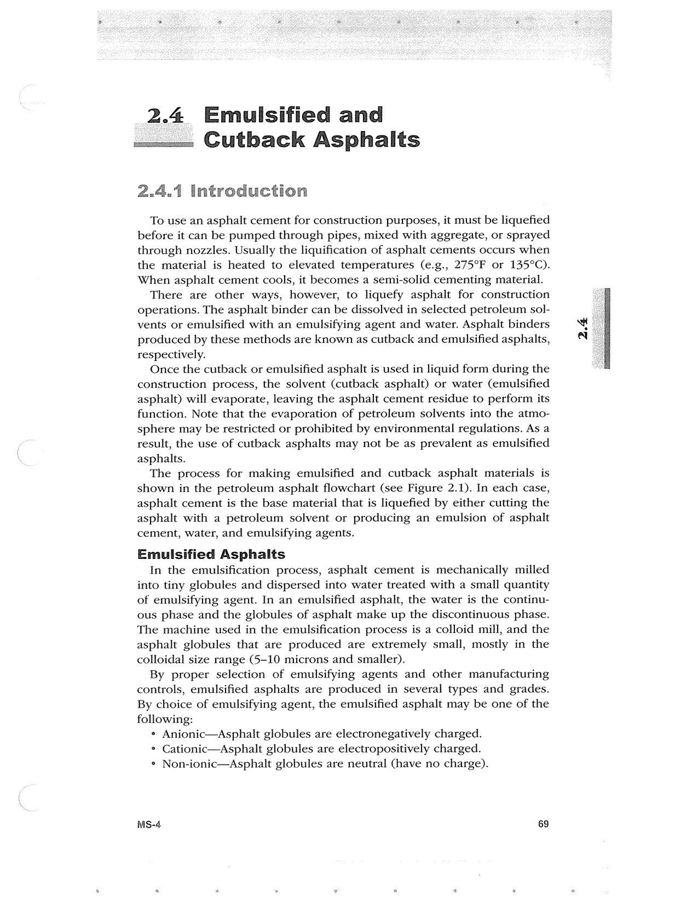

PDF page 103 · book page sequence 69


Searchable transcription
Unproofread OCR · 359 detected words; mean OCR confidence 95.53. Check technical values, symbols and table columns against the scan.
2.4 Emulsified and Cutback Asphalts
2.4.1 introduction
To use an asphalt cement for construction purposes, it must be liquefied before it can be pumped through pipes, mixed with aggregate, or sprayed through nozzles. Usually the liquification of asphalt cements occurs when the material is heated to elevated temperatures (e.g., 275°F or 135°C). When asphalt cement cools, it becomes a semi-solid cementing material.
There are other ways, however, to liquefy asphalt for construction operations. The asphalt binder can be dissolved in selected petroleum sol- vents or emulsified with an emulsifying agent and water. Asphalt binders produced by these methods are known as cutback and emulsified asphalts, respectively.
Once the cutback or emulsified asphalt is used in liquid form during the construction process, the solvent (cutback asphalt) or water (emulsified asphalt) will evaporate, leaving the asphalt cement residue to perform its function. Note that the evaporation of petroleum solvents into the atmo- sphere may be restricted or prohibited by environmental regulations. As a result, the use of cutback asphalts may not be as prevalent as emulsified asphalts.
The process for making emulsified and cutback asphalt materials is shown in the petroleum asphalt flowchart (see Figure 2.1). In each case, asphalt cement is the base material that is liquefied by either cutting the asphalt with a petroleum solvent or producing an emulsion of asphalt cement, water, and emulsifying agents.
Emulsified Asphalts
In the emulsification process, asphalt cement is mechanically milled into tiny globules and dispersed into water treated with a small quantity of emulsifying agent. In an emulsified asphalt, the water is the continu- ous phase and the globules of asphalt make up the discontinuous phase. The machine used in the emulsification process is a colloid mill, and the asphalt globules that are produced are extremely small, mostly in the colloidal size range (5-10 microns and smaller).
By proper selection of emulsifying agents and other manufacturing controls, emulsified asphalts are produced in several types and grades. By choice of emulsifying agent, the emulsified asphalt may be one of the following:
e Anionic—Asphalt globules are electronegatively charged.
° Cationic—Asphalt globules are electropositively charged.
° Non-ionic—Asphalt globules are neutral (have no charge).
MS-4 69